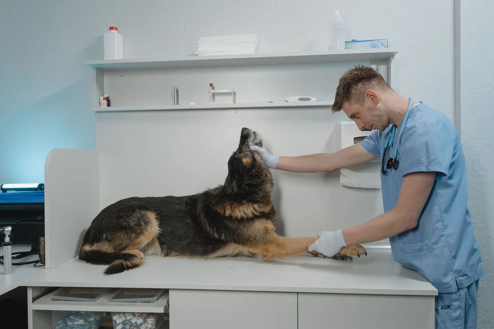
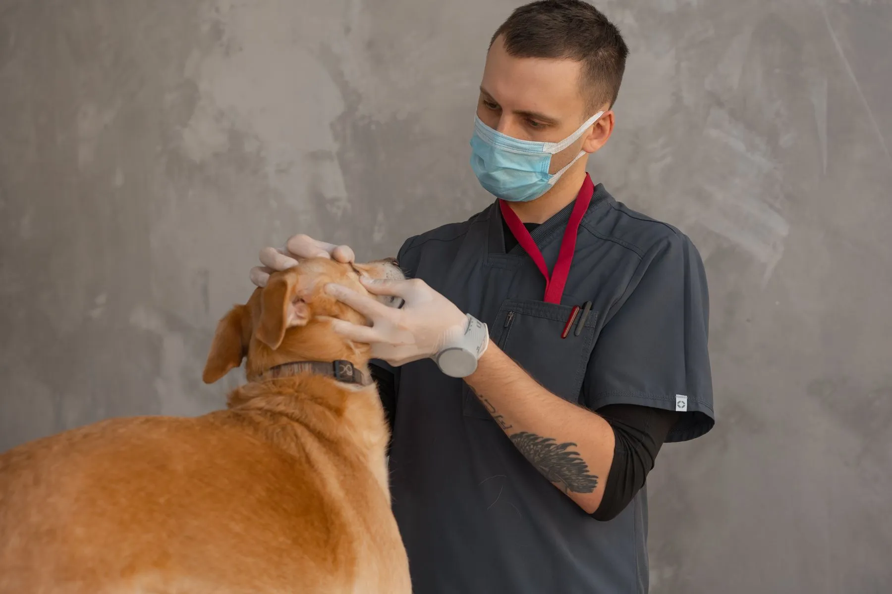
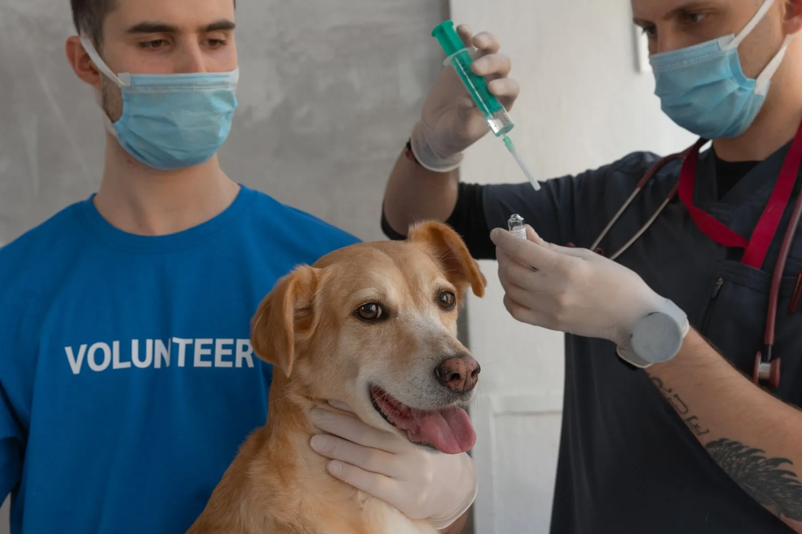
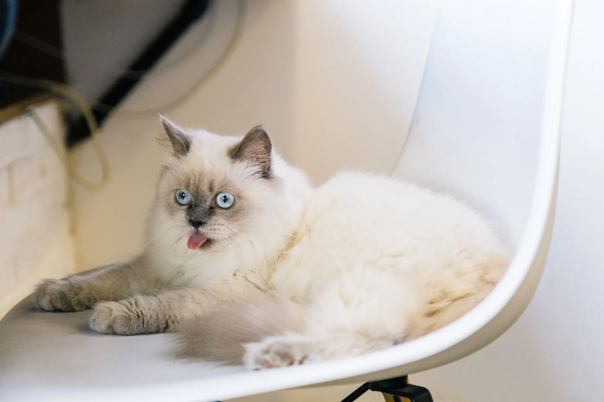
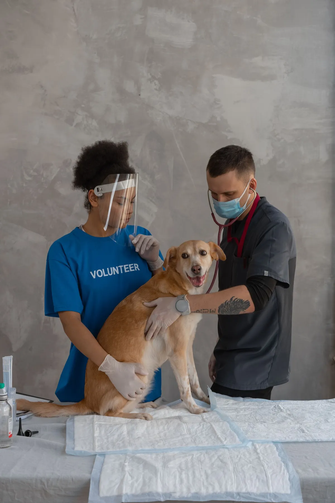

Consulta
Exame clínico completo, com tempo pra tirar dúvidas
AgendarModelo de site feito pela Orbi · nome, preços e endereço fictícios Quero um assim
Clínica veterinária · Jardim Botânico
Consultas, vacinas, exames e cirurgias, com o seu pet atendido sem pressa e você sabendo de tudo.
Agendar consulta
A gente avisa no seu WhatsApp quando chegar a hora da próxima dose. Você não precisa lembrar de nada.
Amparo VetCarteira de vacinação

Exame clínico completo, com tempo pra tirar dúvidas
Agendar
V10, antirrábica, gripe e giárdia, com lembrete
AgendarVermífugo, vacinas e orientação de alimentação
Agendar
Horário separado e sala calma, sem cachorro latindo
AgendarSangue, ultrassom e raio-X com resultado explicado
Agendar
Com avaliação pré-cirúrgica e acompanhamento
AgendarEscolha o atendimento, o dia e o horário. A clínica confirma pelo WhatsApp.